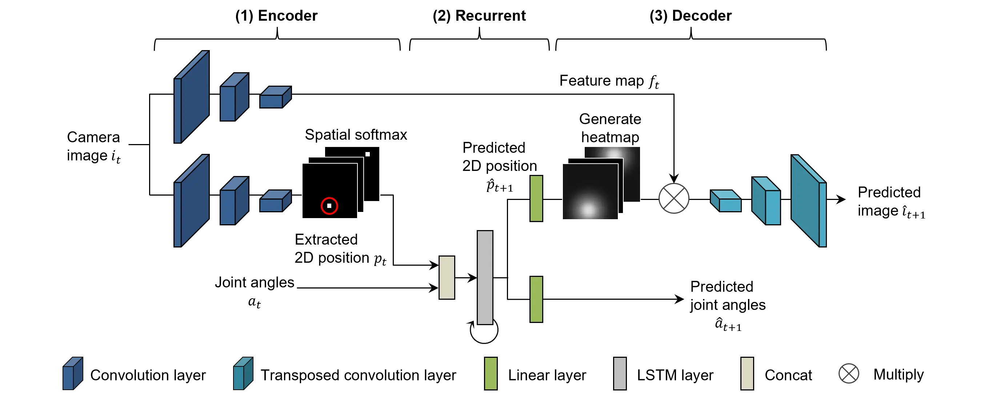
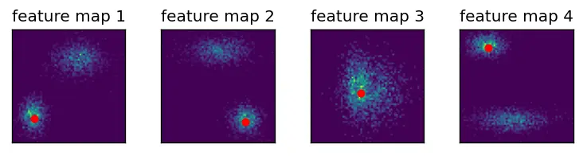
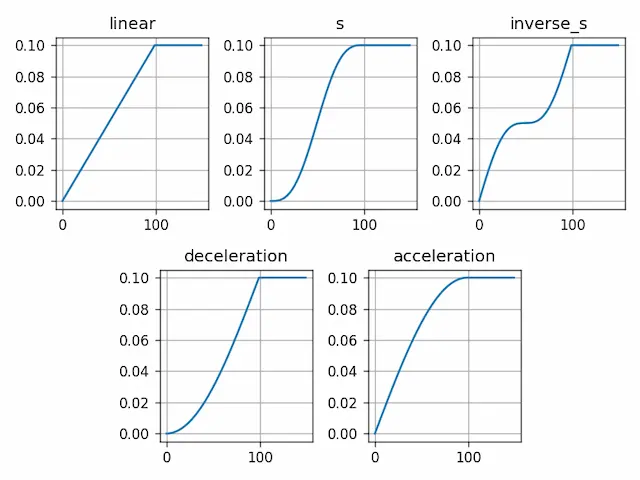

Model Overview
SARNN "explicitly" extracts the spatial coordinates of task-critical positions (work objects and arms) from images and learns the coordinates and joint angles of the robot, thereby significantly improving robustness to changes in object position1. The figure below shows the network structure of SARNN, which consists of an Encoder that extracts image features $f_t$ and object position coordinates $p_t$ from camera images $i_t$, a Recurrent that learns time-series changes in the robot's joint angles $a_t$ and object position coordinates $p_t$, and a Decoder that reconstructs images based on image features $f_t$ and heat maps $\hat h_{t+1}$.
The CNN layers (Convolution layer and Transposed convolutional layer) of the upper part of the Encoder and Decoder extract information about the color and shape of objects by extracting and reconstructing image features. The lower CNN extracts 2D position information of objects by using the Spatial Softmax layer. The Recurrent part predicts only the position information $p_{t+1}$ of the object, which does not contain enough information to reconstruct the image by Decoder. Therefore, a heat map $\hat h_{t+1}$ centered on the predicted coordinate information $p_{t+1}$ is generated, and by multiplying it with the image features extracted by the CNN in the upper section, a predicted image $\hat i_{t+1}$ is generated based on the information around the predicted attention point.
Here, we show the implementation method and model classes of SARNN's characteristic features: spatial attention mechanism, heat-map generator, loss scheduler, and back-propagation method.

Spatial Attention Mechanism
The spatial attention mechanism emphasizes important information (large pixel values) by multiplying the feature map by Softmax, and then extracts the position informations of the emphasized pixels using Position-Encoding.
The following figure shows the processing results of the spatial attention mechanism, where important position informations (red dots) is extracted by multiplying a "pseudo" feature map generated using two randomly generated gaussian distributions by Softmax.
Since CNN feature maps contain a wide variety of information, they are not enhanced by simply multiplying Softmax.
In order to further enhance the features, it is important to use Softmax with temperature.
You can check the effect of Softmax with temperature by adjusting the parameter temperature in the sample program below.
The red dots in the figure indicate the positions extracted by spatial softmax, and since they are generated at the center of one of the gaussian distributions, the position informations can be extracted appropriately.

| [SOURCE] SpatialSoftmax.py | |
|---|---|
| |
Heatmap Generator
The heatmap generator generates a heatmap centered on the location information (specific pixel coordinates).
The following figure shows a heatmap generated by the heatmap generator centered on the location extracted by the spatial attention mechanism (red dot in the figure).
The size of the heatmap can be set using the heatmap_size parameter. If the heatmap size is small, only the information near the attention point is considered, and if the heatmap size is large, the image is generated with some of the surrounding information.
Note that if the heatmap is too small, the corresponding predictive image $\hat i_{t+1}$ cannot be generated, and if it is too large, the parameter must be adjusted to be sensitive to changes in the environment (background and obstacles).

| [SOURCE] InverseSpatialSoftmax.py | |
|---|---|
| |
Loss Scheduler
The loss scheduler is a callback function that gradually weights the prediction error of the attention point according to the epoch, and is an important feature for training SARNN.
The following figure shows the weighting curve for each curve_name argument, where the horizontal axis is the number of epochs and the vertical axis is the weighting value.
Loss weighting starts from 0 and returns the maximum weighting value (e.g. 0.1) at the epoch set by decay_end (e.g. 100).
Note that the maximum weighting value is specified by the __call__ method.
This class supports the five types of curves shown in the figure (linear, S-curve, inverse S-curve, deceleration, and acceleration interpolation).

The reason for using the error scheduler for training SARNN is to allow the filters of the CNN to be "freely" trained in the early stages of training. Since the Encoder and Decoder weights of SARNN are initialized randomly, visual features are not properly extracted/learned in the early learning phase.
If the attention prediction error obtained in such a situation is propagated backward, the attention point will not be correctly directed to the work object, and the attention point that minimizes the "prediction image error" will be learned.
Therefore, it is possible to obtain an attention point that focuses only on the work object by ignoring the prediction error of the attention point in the initial stage of learning, and learning the error of the attention point prediction when the filter of the CNN finishes learning the features.
The decay_end adjusts the learning timing of the CNN, which is usually set around 1000 epochs, but may need to be adjusted depending on the task.
| [SOURCE] callback.py | |
|---|---|
| |
Backpropagation Through Time
We use Backpropagation Through Time (BPTT) to learn the time series of the model2.
In RNN, the internal state $h_{t}$ at each time depends on the internal state $h_{t-1}$ at the previous time $t-1$.
In BPTT, the parameters are updated at each time by calculating the loss at each time and then calculating the gradient backward.
Specifically, image $i_t$ and joint angle $a_{t}$ are input to the model, and the next state ($\hat i_{t+1}$, $ \hat a_{t+1}$) is output (predicted).
The mean squared error nn.MSELoss of the predictions and true values ($f_{t+1}$, $a_{t+1}$) for all sequences is calculated and error propagation is performed based on the loss value loss.
The parameters at each time are used at all times after that time, so back propagation is performed with temporal expansion.
Lines 47-54 show that SARNN computes not only the image loss and joint angle loss, but also the prediction loss of the attention point. Since the true value of the attention point does not exist, the bi-directional loss3 is used to learn the attention point. Specifically, the model updates the weights to minimize the loss between the attention point $\hat p_{t+1}$ predicted by the RNN at time $t$ and the attention point $p_{t+1}$ extracted by the CNN at time $t+1$. Based on this bidirectional loss, LSTM learns the time-series relationship between attention points and joint angles, which not only eliminates redundant image predictions, but also induces the CNN to predict attention points that are important for motion prediction.
Also, loss_weights weights each modality loss and determines which modality to focus on for learning.
In deep prediction learning, the joint angles are intensively learned because the predicted joint angles are directly related to the robot's motion commands.
However, if image information is not sufficiently learned, integrated learning of images and joint angles cannot be performed properly (joint angle prediction corresponding to image information becomes difficult), thus the weighting coefficients must be adjusted according to the model and task.
In our experience, the weighting factor is often set to 1.0 for all or 0.1 for images only.
| [SOURCE] fullBPTT.py | |
|---|---|
| |
model.SARNN
Bases: nn.Module
SARNN: Spatial Attention with Recurrent Neural Network. This model "explicitly" extracts positions from the image that are important to the task, such as the work object or arm position, and learns the time-series relationship between these positions and the robot's joint angles. The robot is able to generate robust motions in response to changes in object position and lighting.
Parameters:
| Name | Type | Description | Default |
|---|---|---|---|
rec_dim |
int
|
The dimension of the recurrent state in the LSTM cell. |
required |
k_dim |
int
|
The dimension of the attention points. |
5
|
joint_dim |
int
|
The dimension of the joint angles. |
14
|
temperature |
float
|
The temperature parameter for the softmax function. |
0.0001
|
heatmap_size |
float
|
The size of the heatmap in the InverseSpatialSoftmax layer. |
0.1
|
kernel_size |
int
|
The size of the convolutional kernel. |
3
|
activation |
str
|
The name of activation function. |
'lrelu'
|
im_size |
list
|
The size of the input image [height, width]. |
[128, 128]
|
Source code in en/docs/model/src/model.py
14 15 16 17 18 19 20 21 22 23 24 25 26 27 28 29 30 31 32 33 34 35 36 37 38 39 40 41 42 43 44 45 46 47 48 49 50 51 52 53 54 55 56 57 58 59 60 61 62 63 64 65 66 67 68 69 70 71 72 73 74 75 76 77 78 79 80 81 82 83 84 85 86 87 88 89 90 91 92 93 94 95 96 97 98 99 100 101 102 103 104 105 106 107 108 109 110 111 112 113 114 115 116 117 118 119 120 121 122 123 124 125 126 127 128 129 130 131 132 133 134 135 136 137 138 139 140 141 142 143 | |
forward(xi, xv, state=None)
Forward pass of the SARNN module. Predicts the image, joint angle, and attention at the next time based on the image and joint angle at time t. Predict the image, joint angles, and attention points for the next state (t+1) based on the image and joint angles of the current state (t). By inputting the predicted joint angles as control commands for the robot, it is possible to generate sequential motion based on sensor information.
Parameters:
| Name | Type | Description | Default |
|---|---|---|---|
xi |
torch.Tensor
|
Input image tensor of shape (batch_size, channels, height, width). |
required |
xv |
torch.Tensor
|
Input vector tensor of shape (batch_size, input_dim). |
required |
state |
tuple
|
Initial hidden state and cell state of the LSTM cell. |
None
|
Returns:
| Name | Type | Description |
|---|---|---|
y_image |
torch.Tensor
|
Decoded image tensor of shape (batch_size, channels, height, width). |
y_joint |
torch.Tensor
|
Decoded joint prediction tensor of shape (batch_size, joint_dim). |
enc_pts |
torch.Tensor
|
Encoded points tensor of shape (batch_size, k_dim * 2). |
dec_pts |
torch.Tensor
|
Decoded points tensor of shape (batch_size, k_dim * 2). |
rnn_hid |
tuple
|
Tuple containing the hidden state and cell state of the LSTM cell. |
Source code in en/docs/model/src/model.py
-
Hideyuki Ichiwara, Hiroshi Ito, Kenjiro Yamamoto, Hiroki Mori, and Tetsuya Ogata. Contact-rich manipulation of a flexible object based on deep predictive learning using vision and tactility. In 2022 International Conference on Robotics and Automation (ICRA), 5375–5381. IEEE, 2022. ↩
-
David E Rumelhart, Geoffrey E Hinton, and Ronald J Williams. Learning representations by back-propagating errors. nature, 323(6088):533–536, 1986. ↩
-
Hyogo Hiruma, Hiroshi Ito, Hiroki Mori, and Tetsuya Ogata. Deep active visual attention for real-time robot motion generation: emergence of tool-body assimilation and adaptive tool-use. IEEE Robotics and Automation Letters, 7(3):8550–8557, 2022. ↩